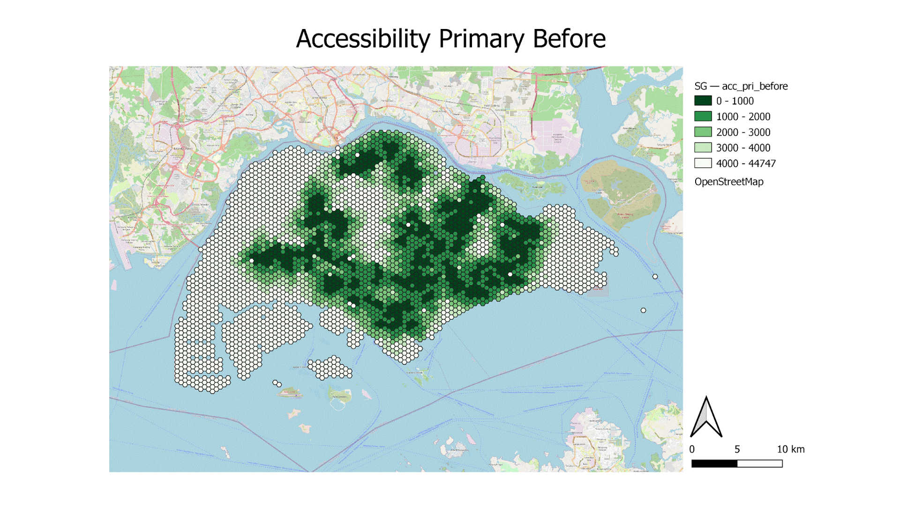

Primary School Results
Accessibility:

The gif above shows the change in accessibility before and after the closure of the primary schools. Upon further analysis, we notice that the central/southern subzone has turned to a lighter shade which indicates that residents of that area would have to travel further assuming they would commute to the nearest school. However, the change seems very minor as there are numerous other primary schools clustered together in those areas. Let us now analyse each map in closer detail.
 The map shows that the majority of Singapore Primary Schools in 2018 are highly accessible. There are some areas which are completely white/ inaccessible, namely the North-Western planning area of Lim Chu Kang, which holds farmlands and cemeteries, and the Western planning areas of Pioneer and Tuas. However, the accessibility of these areas is inconsequential to students as they are not residential areas but rather industrial areas which also explains the inaccessibility to the primary schools (we will go into more detail on the residential population in the later section later).
The map shows that the majority of Singapore Primary Schools in 2018 are highly accessible. There are some areas which are completely white/ inaccessible, namely the North-Western planning area of Lim Chu Kang, which holds farmlands and cemeteries, and the Western planning areas of Pioneer and Tuas. However, the accessibility of these areas is inconsequential to students as they are not residential areas but rather industrial areas which also explains the inaccessibility to the primary schools (we will go into more detail on the residential population in the later section later).
Furthermore, the map has 11 yellow icons which denote the schools which will close or have already closed.
We have to monitor the areas around these schools closely as they are the main subject of our analysis and would definitely impact the equity of access.
 The map above shows the accessibility of primary schools after the closure of the aforementioned 11 primary schools. Regarding the area circled in the central/southern region which encompasses Stamford Primary School, its closure has caused the colour density to decrease, meaning that the residents living within the subzone will have lower accessibility, should students choose to commute to the nearest primary school.
The map above shows the accessibility of primary schools after the closure of the aforementioned 11 primary schools. Regarding the area circled in the central/southern region which encompasses Stamford Primary School, its closure has caused the colour density to decrease, meaning that the residents living within the subzone will have lower accessibility, should students choose to commute to the nearest primary school. 
On the other hand, in the western region also denoted by a yellow circle, we can see the closure of Pioneer Primary School does not have much impact on accessibility. We discovered that the reason for this was the existence of numerous other primary schools in close proximity to Pioneer Primary School, which prevented the significant loss in accessibility around the region.

The map above shows the change in accessibility after the closure of primary schools. Based on our analysis, the darker the colour in green, the greater the change in accessibility.
For the analysis of the change map, where we calculated the difference in the shortest distance, we take the shortest distances after the school closures minus the distance pre-closure/merger. We have derived the change map and can analyse the areas where the distance has increased, such that the primary school student will need to travel in order to reach the next nearest Primary School or inequity of access to Primary Schools in the subzones or planning areas located in the central/southern area where Stamford Primary School resides on,and it is represented by the darker shades in the map (positive value). Based on the before and after choropleth maps for Primary Schools that we have analysed previously, we can identify similar areas that were circled in yellow (central/southern region) which were deemed as being denser in colour in general. Hence, the closure of primary schools within the subzone or planning area has generally decreased the accessibility for the residents living in the area.
In addition, if we try to deduce why some primary schools close down, we can take reference from Stamford Primary which is one of the schools that closed down, and based on the number of residential buildings that it would potentially service, we will notice that it is proportionally less compared to the number of residential buildings serviced by other schools as seen from the Voronoi Diagram below.
Service area using Voronoi Polygon:
To further complement our previous analysis with the Choropleth Map (shortest distance), we have used Voronoi polygons to identify the difference between the flying distance to validate our Choropleth map analysis of the number of the residential building serviced before and after the closure of the primary schools. We will now look into each of them shortly. The Voronoi polygons delineate the areas which each school would most likely service as any point within the area of a certain school would have that school as the closest one in terms of flying distance. Before the primary schools close down, we identified 4 areas that are circled in green that will potentially change due to the closure and it will cause the Voronoi Polygon to shift or change and even cause the colour density to lighten.
Before the primary schools close down, we identified 4 areas that are circled in green that will potentially change due to the closure and it will cause the Voronoi Polygon to shift or change and even cause the colour density to lighten.

After the closure of the primary schools, we can delineate that the shape of the Voronoi Polygon shape has shifted and changed, causing the colour to tone down as the nearby schools have taken up the count of residences to service those that are affected and the total count of residential buildings that were once assumed to be serviced by the closed school would be split up and becomes reassigned with the next nearest existing Primary School and it will be assigned to that Voronoi Polygon of the nearest school. One example is towards the central/ southern of Singapore, Stamford Primary School has been closed down which explains the shift in the Voronoi Polygon being lighter, causing the Voronoi Polygon that serves both Cantonment Primary School and Farrer Park Primary School density to be changed.
Junior Colleges Result
Accessibility:
Moving onto the analysis of the impact of Junior Colleges(JC), similar to the primary schools, the gif above shows the change in accessibility before and after the closures of the 6 JCs. Immediately, we notice that a significant amount of areas have turned to a lighter shade, indicating that students who are residents of that area would now have to travel further to the next nearest JC. Additionally, the areas that are most heavily impacted are the northern and western residential areas such as Woodlands and Jurong West. Let us now analyse each map in closer detail.
 The map above shows the accessibility of JCs in Singapore in 2018. The denser the colour (dark green), the shorter the travel distance between the points in Singapore to their nearest JC. Notice that there are 6 yellow icons for the closed JC, we will monitor the difference especially those in the yellow circle to see how the closure of these schools affects the equity of access.
The map above shows the accessibility of JCs in Singapore in 2018. The denser the colour (dark green), the shorter the travel distance between the points in Singapore to their nearest JC. Notice that there are 6 yellow icons for the closed JC, we will monitor the difference especially those in the yellow circle to see how the closure of these schools affects the equity of access.
 After the closure of the 6 JCs, the closure of Jurong JC within the western yellow circle has significantly lowered the equity of access for residents living within the subzone, reflected by the decrease in colour density. Due to the closure of the JC, the residents who are existing or potential JC students will have to travel further to JC which causes a decrease in the accessibility and an increase in inconvenience as they will have to travel a longer distance to school. Similarly, for the yellow circle towards the north, the closure of Innova JC has decreased the accessibility of students living in northern regions such as Woodlands and Kranji.
After the closure of the 6 JCs, the closure of Jurong JC within the western yellow circle has significantly lowered the equity of access for residents living within the subzone, reflected by the decrease in colour density. Due to the closure of the JC, the residents who are existing or potential JC students will have to travel further to JC which causes a decrease in the accessibility and an increase in inconvenience as they will have to travel a longer distance to school. Similarly, for the yellow circle towards the north, the closure of Innova JC has decreased the accessibility of students living in northern regions such as Woodlands and Kranji.
Furthermore, the closure of Tampines and Temasek JC has caused a decrease in accessibility in the east area, making the equity of access to other JCs decrease and resulting in the existing JC students travelling to the merged JC that was announced. In addition, it also affects potential students who would prefer to study in a JC and would need to seek alternative JCs of their preference which is significantly further from their residential area.

Similar to the analysis of primary schools, we have again derived a change map showing the areas impacted by the closures of JCs. Further complimenting our analysis, the map above shows the change in accessibility after the closure of the 6 JCs. Basically, the darker the green colour, the greater the change in accessibility, and in this case, a denser green hexagon shows lower accessibility and a lighter green hexagon shows a lesser impact on accessibility. The region with a darker colour density shows the greater distance needed for residents in the region to travel to the nearest JC. The greatest change comes from the closure of Innova JC in the north, as students from the area would have to travel at least 8 kilometres to the next nearest or the merged JC such as Yishun JC, and this portrays an inequity of access to JC for existing or potential students living in the north area.
In addition, based on the map for differences in accessibility, areas involving Pioneer, Pasir Ris, and Woodlands were affected the most by the closure or merger of JC schools. While the JC schools are clustered nearer to the middle of the island for an even spread to enable potential and existing students to have an equity of access, some students might be living at the edge of Singapore such as Pioneer, Joo Koon and Pasir Ris (closure of Tampines and Temasek JC) and a longer travelling time and distance is required to travel to the next nearer JC that is outside the subzone (E.g.,Travelling from Woodlands to Yishun JC due to the closure of Innova JC).
Based on the map layout as shown above, we are able to observe that the changes to the color densityof the JC closure are significantly more than the Primary School although there are only 6 closure. The reason being, compared to the Primary School, each JC are further from one another unlike Primary School where different Pirmary School are clustered around each other example Pioneer Primary have West Wood Primary and Juying Primary School around it. The JC are evenly distributed across Singapore and are further from each other hence with the closure of the 6 JC the resident around it will significantly decrease in accessibility example the closure of Innova JC in Woodlands, students who stay around there will have to travel all the way down to Yishun, Yishun JC.
Furthermore, the map shows that the majority of Singapore JC is accessible. Similarly, there are some areas which are completely white/ inaccessible, namely the North-Western planning area of Lim Chu Kang, and the Western planning areas of Pioneer and Tuas. However, the accessibility of these areas is inconsequential to students as they are not residential but rather industrial areas which also explains the inaccessibility.